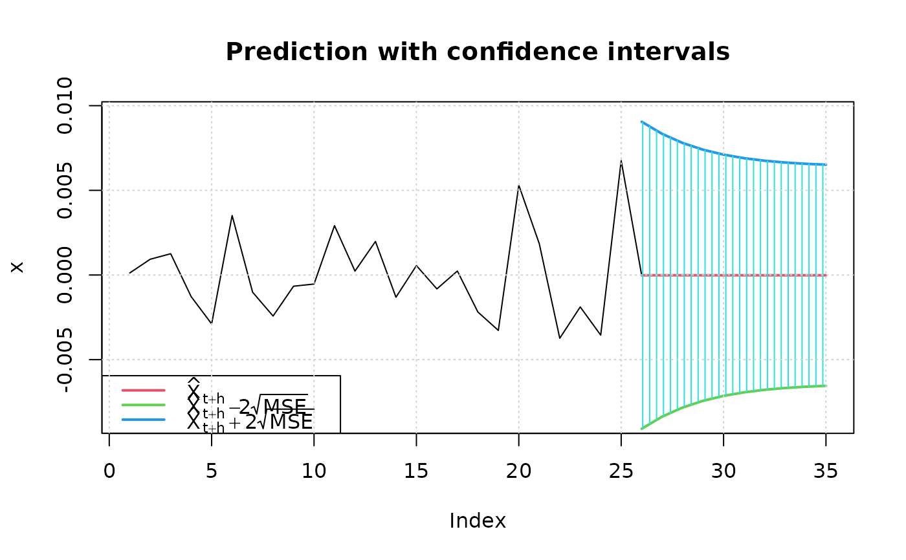
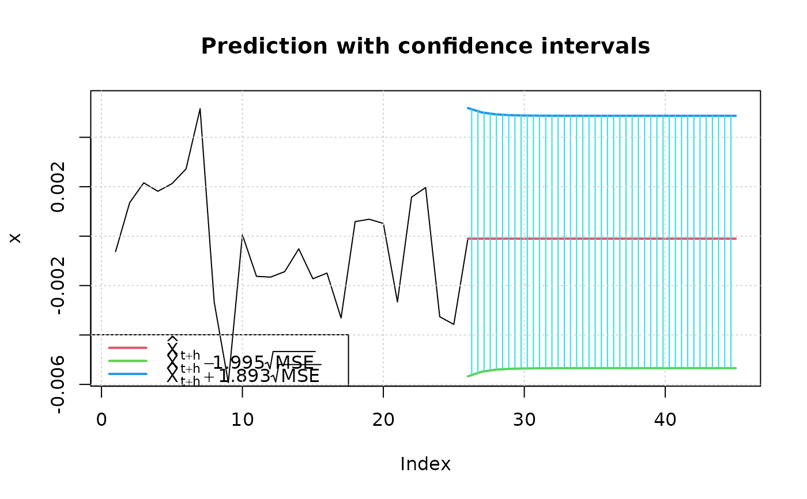
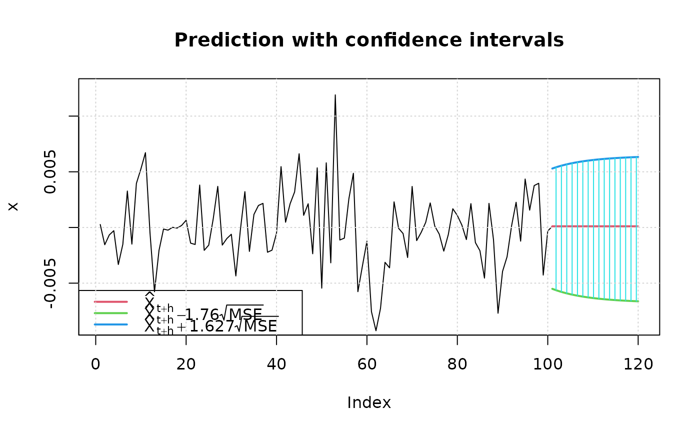

GARCH prediction function
methods-predict.RdPredicts a time series from a fitted GARCH object.
Usage
# S4 method for class 'fGARCH'
predict(object, n.ahead = 10, trace = FALSE, mse = c("cond","uncond"),
plot=FALSE, nx=NULL, crit_val=NULL, conf=NULL, ..., p_loss = NULL)Arguments
- n.ahead
an integer value, denoting the number of steps to be forecasted, by default 10.
- object
an object of class
"fGARCH"as returned by the functiongarchFit.- trace
a logical flag. Should the prediction process be traced? By default
trace=FALSE.- mse
If set to
"cond",meanErroris defined as the conditional mean errors \(\sqrt{E_t[x_{t+h}-E_t(x_{t+h})]^2}\). If set to"uncond", it is defined as \(\sqrt{E[x_{t+h}-E_t(x_{t+h})]^2}\).- plot
If set to
TRUE, the confidence intervals are computed and plotted- nx
The number of observations to be plotted along with the predictions. The default is
round(n*0.25), where n is the sample size.- crit_val
The critical values for the confidence intervals when
plotis set toTRUE. The intervals are defined as \(\hat{x}_{t+h}\) +crit_val[2] * meanErrorand \(\hat{x}_{t+h}\) +crit_val[1] * meanErrorif two critical values are provided and \(\hat{x}_{t+h} \pm\)crit_val * meanErrorif only one is given. If you do not provide critical values, they will be computed automatically.- conf
The confidence level for the confidence intervals if
crit_valis not provided. By default it is set to 0.95. The critical values are then computed using the conditional distribution that was chosen to create theobjectwithgarchFitusing the sameshapeandskewparameters. If the conditionnal distribution was set to"QMLE", the critical values are computed using the empirical distribution of the standardized residuals.- ...
additional arguments to be passed.
- p_loss
-
if not null, compute predictions for VaR and ES for loss level
p_loss(typically, 0.05 or 0.01).
Details
The predictions are returned as a data frame with columns
"meanForecast", "meanError", and
"standardDeviation". Row h contains the predictions for
horizon h (so, n.ahead rows in total).
If plot = TRUE, the data frame contain also the prediction
limits for each horizon in columns lowerInterval and
upperInterval.
If p_loss is not NULL, predictions of Value-at-Risk (VaR) and
Expected Shortfall (ES) are returned in columns VaR and
ES. The data frame has attribute "p_loss" containing
p_loss. Typical values for p_loss are 0.01 and 0.05.
These are somewhat experimental and the arguments and the returned values may change.
Examples
## Parameter Estimation of Default GARCH(1,1) Model
set.seed(123)
fit = garchFit(~ garch(1, 1), data = garchSim(), trace = FALSE)
fit
#>
#> Title:
#> GARCH Modelling
#>
#> Call:
#> garchFit(formula = ~garch(1, 1), data = garchSim(), trace = FALSE)
#>
#> Mean and Variance Equation:
#> data ~ garch(1, 1)
#> <environment: 0x5c825d69b938>
#> [data = garchSim()]
#>
#> Conditional Distribution:
#> norm
#>
#> Coefficient(s):
#> mu omega alpha1 beta1
#> -1.5658e-05 3.1101e-06 2.8879e-01 4.0817e-01
#>
#> Std. Errors:
#> based on Hessian
#>
#> Error Analysis:
#> Estimate Std. Error t value Pr(>|t|)
#> mu -1.566e-05 2.637e-04 -0.059 0.953
#> omega 3.110e-06 1.874e-06 1.660 0.097 .
#> alpha1 2.888e-01 1.808e-01 1.597 0.110
#> beta1 4.082e-01 2.777e-01 1.470 0.142
#> ---
#> Signif. codes: 0 ‘***’ 0.001 ‘**’ 0.01 ‘*’ 0.05 ‘.’ 0.1 ‘ ’ 1
#>
#> Log Likelihood:
#> 440.3751 normalized: 4.403751
#>
#> Description:
#> Thu Nov 13 09:34:11 2025 by user: georgi
#>
## predict
predict(fit, n.ahead = 10)
#> meanForecast meanError standardDeviation
#> 1 -1.565763e-05 0.004533622 0.004533622
#> 2 -1.565763e-05 0.004175561 0.004175561
#> 3 -1.565763e-05 0.003906646 0.003906646
#> 4 -1.565763e-05 0.003707706 0.003707706
#> 5 -1.565763e-05 0.003562489 0.003562489
#> 6 -1.565763e-05 0.003457674 0.003457674
#> 7 -1.565763e-05 0.003382701 0.003382701
#> 8 -1.565763e-05 0.003329450 0.003329450
#> 9 -1.565763e-05 0.003291827 0.003291827
#> 10 -1.565763e-05 0.003265348 0.003265348
predict(fit, n.ahead = 10, mse="uncond")
#> meanForecast meanError standardDeviation
#> 1 -1.565763e-05 0.00305647 0.004533622
#> 2 -1.565763e-05 0.00305647 0.004175561
#> 3 -1.565763e-05 0.00305647 0.003906646
#> 4 -1.565763e-05 0.00305647 0.003707706
#> 5 -1.565763e-05 0.00305647 0.003562489
#> 6 -1.565763e-05 0.00305647 0.003457674
#> 7 -1.565763e-05 0.00305647 0.003382701
#> 8 -1.565763e-05 0.00305647 0.003329450
#> 9 -1.565763e-05 0.00305647 0.003291827
#> 10 -1.565763e-05 0.00305647 0.003265348
## predict with plotting: critical values = +/- 2
predict(fit, n.ahead = 10, plot=TRUE, crit_val = 2)

#> meanForecast meanError standardDeviation lowerInterval upperInterval
#> 1 -1.565763e-05 0.004533622 0.004533622 -0.009082903 0.009051587
#> 2 -1.565763e-05 0.004175561 0.004175561 -0.008366779 0.008335464
#> 3 -1.565763e-05 0.003906646 0.003906646 -0.007828949 0.007797634
#> 4 -1.565763e-05 0.003707706 0.003707706 -0.007431070 0.007399755
#> 5 -1.565763e-05 0.003562489 0.003562489 -0.007140636 0.007109321
#> 6 -1.565763e-05 0.003457674 0.003457674 -0.006931005 0.006899690
#> 7 -1.565763e-05 0.003382701 0.003382701 -0.006781060 0.006749745
#> 8 -1.565763e-05 0.003329450 0.003329450 -0.006674558 0.006643242
#> 9 -1.565763e-05 0.003291827 0.003291827 -0.006599311 0.006567995
#> 10 -1.565763e-05 0.003265348 0.003265348 -0.006546354 0.006515038
## include also VaR and ES at 5%
predict(fit, n.ahead = 10, plot=TRUE, crit_val = 2, p_loss = 0.05)
#> meanForecast meanError standardDeviation lowerInterval upperInterval
#> 1 -1.565763e-05 0.004533622 0.004533622 -0.009082903 0.009051587
#> 2 -1.565763e-05 0.004175561 0.004175561 -0.008366779 0.008335464
#> 3 -1.565763e-05 0.003906646 0.003906646 -0.007828949 0.007797634
#> 4 -1.565763e-05 0.003707706 0.003707706 -0.007431070 0.007399755
#> 5 -1.565763e-05 0.003562489 0.003562489 -0.007140636 0.007109321
#> 6 -1.565763e-05 0.003457674 0.003457674 -0.006931005 0.006899690
#> 7 -1.565763e-05 0.003382701 0.003382701 -0.006781060 0.006749745
#> 8 -1.565763e-05 0.003329450 0.003329450 -0.006674558 0.006643242
#> 9 -1.565763e-05 0.003291827 0.003291827 -0.006599311 0.006567995
#> 10 -1.565763e-05 0.003265348 0.003265348 -0.006546354 0.006515038
#> VaR ES
#> 1 0.007472803 0.009367219
#> 2 0.006883844 0.008628640
#> 3 0.006441518 0.008073946
#> 4 0.006114292 0.007663591
#> 5 0.005875431 0.007364050
#> 6 0.005703025 0.007147846
#> 7 0.005579706 0.006993199
#> 8 0.005492116 0.006883357
#> 9 0.005430230 0.006805750
#> 10 0.005386677 0.006751133
## predict with plotting: automatic critical values
## for different conditional distributions
set.seed(321)
fit2 = garchFit(~ garch(1, 1), data = garchSim(), trace=FALSE, cond.dist="sged")
## 95% confidence level
predict(fit2, n.ahead=20, plot=TRUE)

#> meanForecast meanError standardDeviation lowerInterval upperInterval
#> 1 -0.0001011749 0.002792102 0.002792102 -0.005672091 0.005183726
#> 2 -0.0001011749 0.002697756 0.002697756 -0.005483848 0.005005147
#> 3 -0.0001011749 0.002657046 0.002657046 -0.005402621 0.004928091
#> 4 -0.0001011749 0.002639724 0.002639724 -0.005368060 0.004895304
#> 5 -0.0001011749 0.002632399 0.002632399 -0.005353446 0.004881440
#> 6 -0.0001011749 0.002629310 0.002629310 -0.005347283 0.004875594
#> 7 -0.0001011749 0.002628009 0.002628009 -0.005344687 0.004873131
#> 8 -0.0001011749 0.002627462 0.002627462 -0.005343594 0.004872094
#> 9 -0.0001011749 0.002627231 0.002627231 -0.005343134 0.004871658
#> 10 -0.0001011749 0.002627134 0.002627134 -0.005342940 0.004871474
#> 11 -0.0001011749 0.002627093 0.002627093 -0.005342858 0.004871397
#> 12 -0.0001011749 0.002627076 0.002627076 -0.005342824 0.004871364
#> 13 -0.0001011749 0.002627069 0.002627069 -0.005342810 0.004871350
#> 14 -0.0001011749 0.002627066 0.002627066 -0.005342804 0.004871345
#> 15 -0.0001011749 0.002627064 0.002627064 -0.005342801 0.004871342
#> 16 -0.0001011749 0.002627064 0.002627064 -0.005342800 0.004871341
#> 17 -0.0001011749 0.002627063 0.002627063 -0.005342799 0.004871341
#> 18 -0.0001011749 0.002627063 0.002627063 -0.005342799 0.004871340
#> 19 -0.0001011749 0.002627063 0.002627063 -0.005342799 0.004871340
#> 20 -0.0001011749 0.002627063 0.002627063 -0.005342799 0.004871340
set.seed(444)
fit3 = garchFit(~ garch(1, 1), data = garchSim(), trace=FALSE, cond.dist="QMLE")
## 90% confidence level and nx=100
predict(fit3, n.ahead=20, plot=TRUE, conf=.9, nx=100)

#> meanForecast meanError standardDeviation lowerInterval upperInterval
#> 1 0.0001058131 0.003189535 0.003189535 -0.005507703 0.005293788
#> 2 0.0001058131 0.003272780 0.003272780 -0.005654212 0.005429191
#> 3 0.0001058131 0.003345421 0.003345421 -0.005782059 0.005547347
#> 4 0.0001058131 0.003409029 0.003409029 -0.005894007 0.005650808
#> 5 0.0001058131 0.003464885 0.003464885 -0.005992313 0.005741661
#> 6 0.0001058131 0.003514051 0.003514051 -0.006078843 0.005821632
#> 7 0.0001058131 0.003557413 0.003557413 -0.006155161 0.005892165
#> 8 0.0001058131 0.003595723 0.003595723 -0.006222585 0.005954477
#> 9 0.0001058131 0.003629617 0.003629617 -0.006282237 0.006009608
#> 10 0.0001058131 0.003659641 0.003659641 -0.006335079 0.006058444
#> 11 0.0001058131 0.003686266 0.003686266 -0.006381938 0.006101751
#> 12 0.0001058131 0.003709898 0.003709898 -0.006423530 0.006140190
#> 13 0.0001058131 0.003730891 0.003730891 -0.006460477 0.006174336
#> 14 0.0001058131 0.003749551 0.003749551 -0.006493320 0.006204689
#> 15 0.0001058131 0.003766150 0.003766150 -0.006522533 0.006231687
#> 16 0.0001058131 0.003780922 0.003780922 -0.006548531 0.006255714
#> 17 0.0001058131 0.003794074 0.003794074 -0.006571679 0.006277108
#> 18 0.0001058131 0.003805790 0.003805790 -0.006592298 0.006296164
#> 19 0.0001058131 0.003816229 0.003816229 -0.006610671 0.006313144
#> 20 0.0001058131 0.003825534 0.003825534 -0.006627048 0.006328279